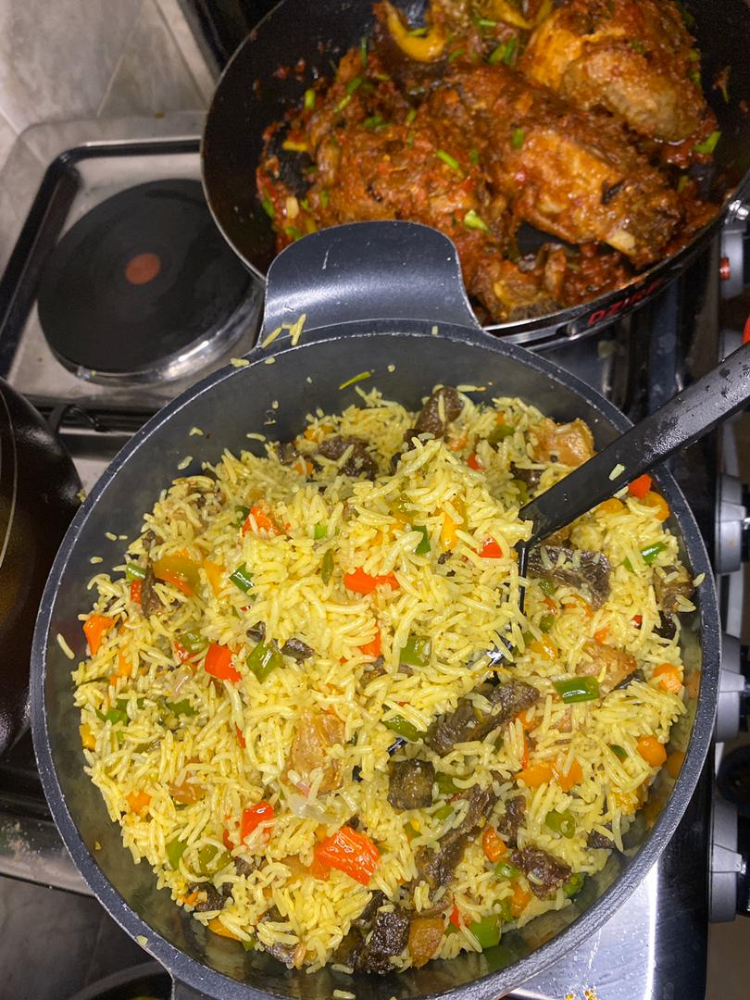

Jollof Rice

Description
Jollof rice is one of the most common dishes in West Africa. There are several regional variations in name and ingredients; for example, in Mali it is called zaamè in Bamanankan. The dish's most common name of Jollof derives from the name of the Wolof people, though in Senegal and Gambia the dish is referred to in Wolof as ceebu jën or benachin. In French-speaking areas, it is called riz au gras. Despite the variations, the dish is "mutually intelligible" across the regions and has become the best known African dish outside the continent.
Ingredients
- 3¾ cups (750g) long grain parboiled rice
- 2-3 cups Tomato Stew
- Chicken (whole chicken, drumsticks or chicken breast)
- Pepper and salt (to taste)
- 2 medium onions
- 3 Knorr cubes
- 2 teaspoons thyme
- 2 teaspoons curry powder (Nigerian curry powder)
Steps
- Prepare the tomato stew. Visit the Tomato Stew page for details on how to do that. It is advisable to prepare tomato stew before hand and keep in the freezer. This is so that whenever you want to cook any jollof rice related dish, it is just a matter of adding it to your cooking.
- If you will use whole chicken then wash and cut it into pieces. Cook with the thyme, Knorr cubes and 2 bulbs of onions (chopped). The cooking time depends on the type of chicken. The rooster or cockerel cooks much faster than the hen but the hen is definitely tastier. When done, grill it in an oven. You may also fry it. This is to give it a golden look which is more presentable especially if you have guests for dinner.
- Parboil the rice using the method detailed in parboiling rice for cooking jollof rice. Rinse the parboiled rice and put in a sieve to drain.
- Pour the chicken stock and the tomato stew into a sizeable pot and leave to boil.
- Add the drained parboiled rice, curry powder, salt and pepper to taste. The water level should be the same level of the rice. This is to ensure that all the water dries up by the time the rice is cooked.
- Cover the pot and leave to cook on low to medium heat. This way the rice does not burn before the water dries up.